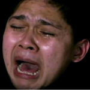

Desain Web Statis
Desain web statis adalah jenis desain situs web yang memiliki konten tetap. Setiap halaman dibuat menggunakan HTML dan CSS tanpa interaksi dengan server atau database. Hal ini membuat situs statis cepat diakses dan mudah dikelola untuk kebutuhan informasi sederhana.
Kelebihan utamanya terletak pada kesederhanaan dan kecepatan, sedangkan kekurangannya adalah sulit diperbarui jika memiliki banyak halaman.